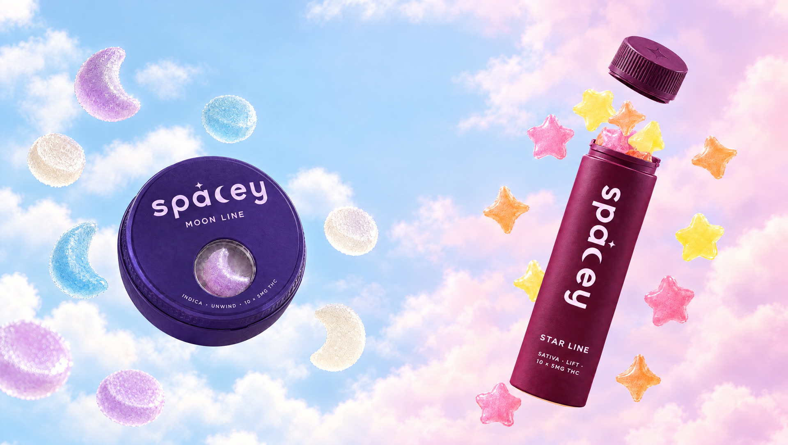
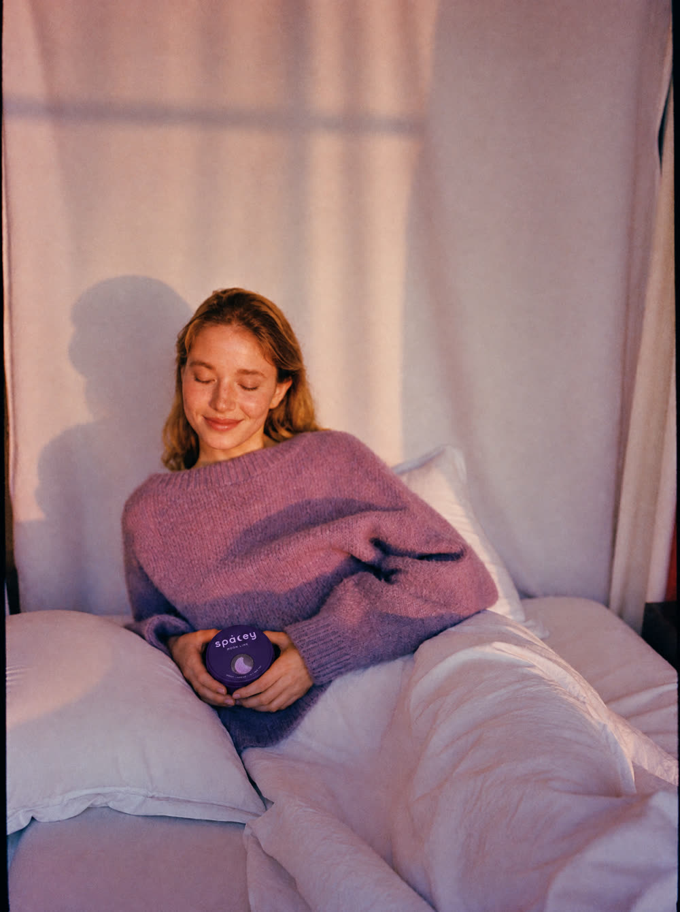
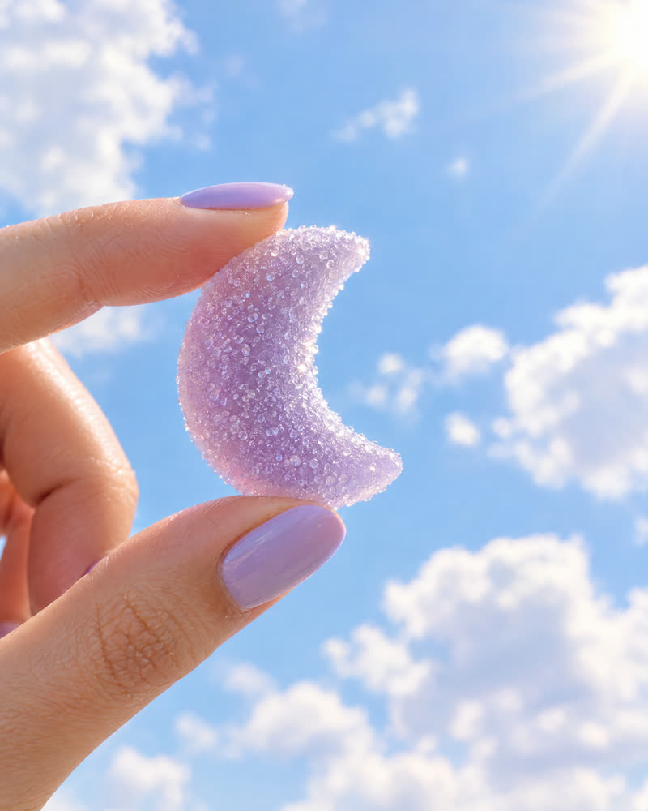
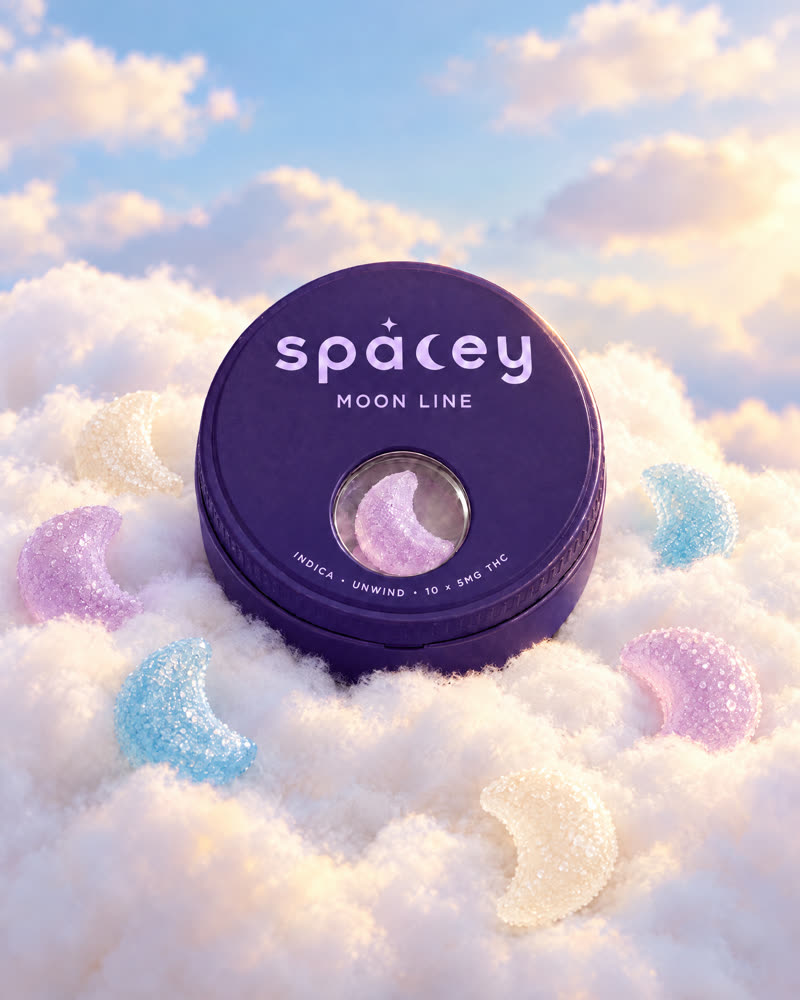
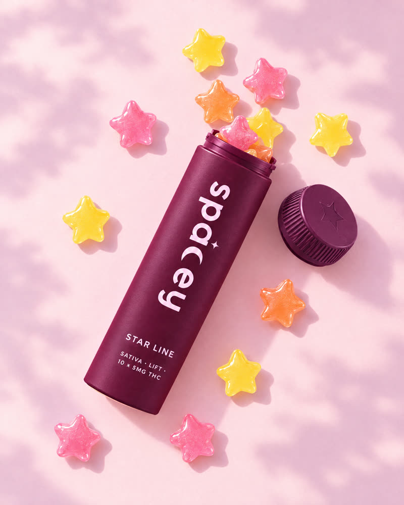
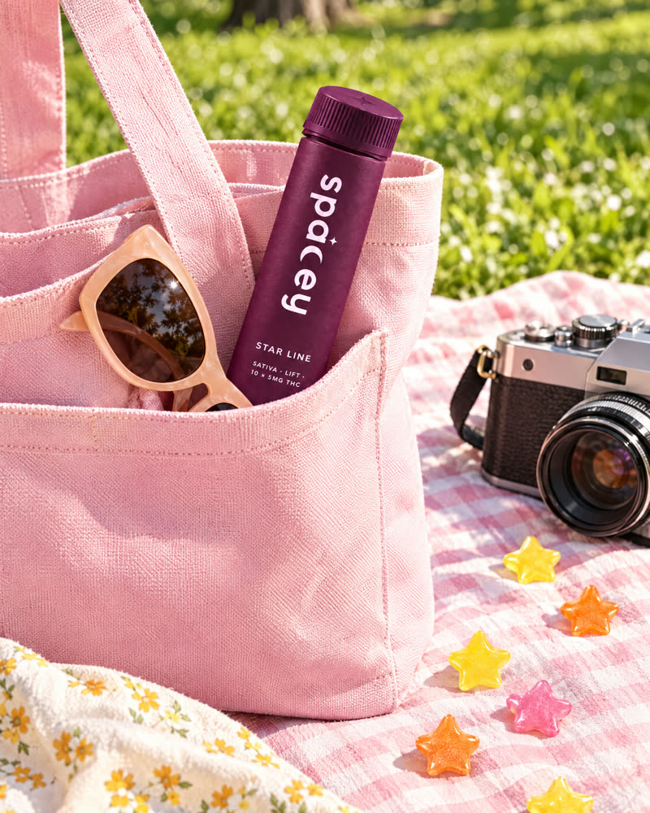
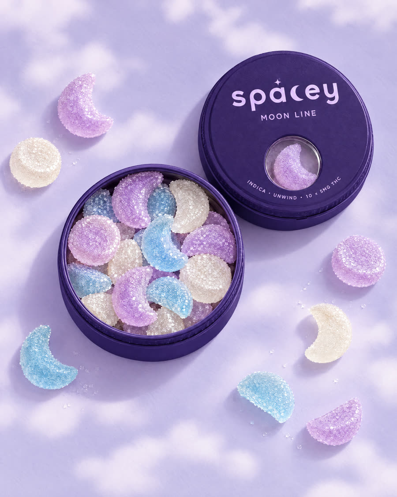

Shooting Star Lift
A bright, happy buzz for sunny afternoons, playlists and spontaneous plans.
- Uplifting
- Giggly
- Daytime
Spacey products are for adults of legal age only. Please confirm your age to enter.

Moons to stay in. Stars to go out. Cannabis gummies dosed by moon phase and tuned by star, so you always know how high you'll float.
The Moon Line is indica for staying in: unwind, recover, sleep. The Star Line is sativa for going out: lift, focus, connect.
A gentle 2.5 mg to take the edge off. Perfect for first timers or a quiet evening on the couch.
A bright, happy buzz for sunny afternoons, playlists and spontaneous plans.
Clear-headed and creative. For drawing, writing, cooking or getting lost in a project.
Made to share. Easy, talkative energy for dinners, rooftops and long nights out.
Every tin comes as a Mix in its night color, or as a single flavor in the color of its fruit. 10 gummies per pack.
A child-resistant push-and-turn tin for the Moon Line and a twist tube for the Star Line. Matte, pocket sized and made to be refilled.

Slow evenings, soft sheets, sore muscles after training. The Moon Line is there for the part of the day that's just yours.
Rooftops, road trips, dinner with the people you love. The Star Line brings the spark without taking over the night.





Moon to stay in, Stars to go out. Each line is built around a feeling, not a strain name.
On the Moon Line the phase tells you the dose. On the Star Line the star tells you the effect.
Edibles take 30 to 90 minutes. Wait at least two hours before taking more. Then just float.
Pectin based, made with real fruit and full-spectrum cannabis extract. Every batch is third-party lab tested for potency and purity.
Start with one Crescent (2.5 mg) from the Moon Line and wait at least two hours before taking more. Everyone's body is different, so going slow is the best way to find your perfect dose.
The Moon Line is indica-leaning and made for relaxing, recovering and sleeping. The Star Line is sativa-leaning and made for energy, creativity and social moments.
Usually between 30 and 90 minutes, depending on your metabolism and whether you've eaten. Effects can last 4 to 6 hours.
Yes. The cannabis is evenly mixed into every gummy, so half a Full Moon is the same as a Half Moon.
Keep the tin or tube closed in a cool, dry place, away from sunlight and out of reach of children and pets.
Moon to stay in. Stars to go out. Find your shape and let the sky do the rest.
Shop the Moon Line Shop the Star Line